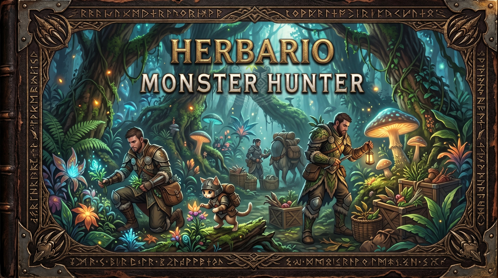

Plantas y hierbas
Recursos vegetales empleados en recetas, mezclas y objetos de apoyo. Consulta el inventario del juego para conocer las combinaciones exactas.
Monster Hunter · Archivo del Gremio
MONSTER HUNTER CÓDICE
Biblioteca de fauna, equipo y expediciones
Tomo V · Recursos y materiales

Todo objeto recogido durante una expedición puede tener un propósito. Este gabinete clasifica los recursos básicos y recuerda sus usos habituales.
Recursos vegetales empleados en recetas, mezclas y objetos de apoyo. Consulta el inventario del juego para conocer las combinaciones exactas.
Ingredientes que pueden formar parte de consumibles y mezclas. Sus efectos dependen de la receta y de la entrega.
Materiales obtenidos de afloramientos mineros, utilizados en la fabricación y mejora de distintos equipos.
Restos recogidos en zonas de exploración o conseguidos durante misiones; pueden ser componentes de armas y armaduras.
Recursos poco comunes que suelen requerir objetivos o condiciones específicas. Registra dónde los encontraste.
Objetos que ayudan a recuperar recursos, resistir condiciones o preparar al cazador para un encuentro.
| Dato | Ejemplo de anotación |
|---|---|
| Nombre | Nombre exacto del objeto dentro del juego. |
| Tipo | Planta, mineral, hueso, material de monstruo o consumible. |
| Obtención | Recolección, recompensa de misión o criatura asociada. |
| Uso | Fabricación, mejora, combinación o apoyo en combate. |